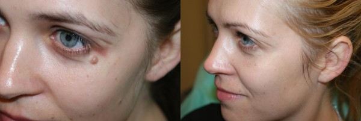
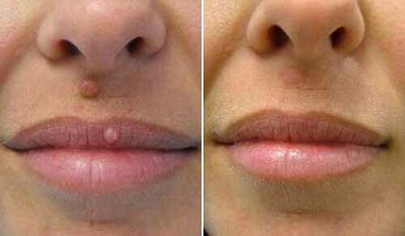
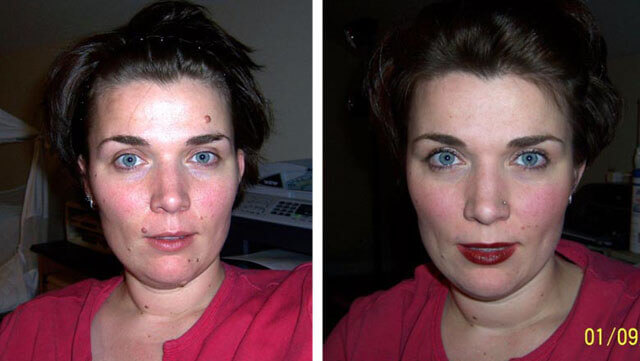

Cum am reușit să scap de papiloame acasă
Papiloamele s-au dovedit a fi primele simptome ale paraziților!
Bună ziua, dragi cititori! Astăzi vreau să vă spun cum am scăpat de două papiloame teribile de pe față.
Nu știam că tot ce trebuia să fac pentru a scăpa de acest lucru groaznic era să-mi curăț corpul de toxine!
Certificat medical:
Dacă papiloamele
nu sunt tratate, boala se dezvoltă și se
răspândește în tot organismul până când apare pe
mucoasele. În 92% din cazuri, papiloamele apar la
nivelul părului sau organelor genitale, inclusiv
la nivelul penisului, vaginului, colului uterin și
anusului. În acest caz, se transformă în veruci
ascuțite.
Un exemplu de răspândire a papiloamelor
Când am descoperit al doilea papilom și am aflat că lucrurile nu se vor opri aici, am decis să găsesc o soluție la această problemă. Nu am vrut să le îndepărtez chirurgical.
Exemplul 2: Nu lăsați papiloamele netratate!
Așa și este.
Medicul meu a spus că papiloamele și verucile sunt primele semne ale prezenței paraziților în organism. Ele produc toxine cu care sistemul nostru imunitar nu le poate face față. Și, ca urmare, apar diverse boli. Aceeași gripă și răceală sunt semnale că organismul este slăbit și nu se mai poate apăra.
Paraziții trăiesc în intestine, ficat, inimă și chiar în creier. Nu este o glumă - ne pot distruge sistemul imunitar.
---------------------------------------------------------------------------------------------
Iată un fragment dintr-o declarație a parazitologului Liviu D. Lazer.
Multe organizații internaționale de sănătate raportează că paraziții care locuiesc în corpul uman sunt cauza multor boli mortale.
Acestea sunt informațiile oficiale ale organizațiilor medicale internaționale. Prin urmare, aceste date pot fi de încredere. Cercetările asupra modului în care paraziții afectează organismul au loc de mult timp. Dar doar recent au dat rezultate semnificative - și există două motive pentru aceasta. În primul rând, cercetarea este un proces foarte lung. Trebuie să găsiți voluntari, să determinați dacă au paraziți și apoi să observați cum îi afectează pe o perioadă lungă de timp. În al doilea rând, recent am început să folosim metode analitice extrem de precise care ne permit să detectăm și să studiem activitatea parazitară la nivel celular. Acest lucru permite colectarea mai multor informații. De exemplu, a devenit clar cum începe cancerul și relația sa directă cu prezența paraziților în organism.
Cercetătorii noștri au confirmat veridicitatea acestor date. Paraziții din corpul uman sunt cauza reală a aproape tuturor bolilor grave, de la ateroscleroză la hepatită și ulcer gastric. Dar, fără îndoială, cel mai periculos lucru pe care îl provoacă este cancerul.
Din păcate, mulți oameni cred că paraziții sunt doar viermi. Dar în afară de viermi, există mii de specii de deparazitare. Paraziții trăiesc în plămâni, inimă, ficat, stomac, creier și chiar în sânge. Se înmulțesc și se răspândesc în tot organismul, hrănindu-se cu resursele acestuia. În funcție de dietă, pot provoca diverse boli. Viermii care atacă inima în majoritatea cazurilor provoacă stop cardiac, paraziții din creier provoacă schizofrenie, cancer sau paralizie, iar paraziții din ficat provoacă hepatită sau cancer. . etc.
Desigur, acest lucru nu se întâmplă peste noapte. Te poți infecta oricând - totul depinde de vârsta ta, stilul de viață, dieta și mediul înconjurător. De regulă, primele etape sunt întotdeauna asimptomatice. Unele semne apar doar după ce infecția a slăbit sistemul imunitar și paraziții au început să distrugă țesuturile corpului.
Deci, cum pot helminții să provoace cancer? Lasă-mă să explic clar. Deci, prin distrugerea țesuturilor corpului uman, paraziții au acces la mișcare liberă prin toate celulele corpului. Dar cauza cancerului este diviziunea celulară necontrolată, așa că, după cum puteți vedea, paraziții sunt destul de capabili să provoace acest proces.
Toate persoanele cu vârsta peste 30-35 de ani ar trebui să fie atenți. Pentru că absolut toată lumea are paraziți. Luați pe cineva, faceți o examinare completă la un centru medical specializat și sigur veți găsi 5 până la 20 de tipuri de paraziți despre care persoana nici măcar nu știe. Este posibil să vă infectați cu paraziți chiar și în timpul activităților de zi cu zi. Transportul in comun, magazinele, birourile si asa mai departe sunt toate locurile in care putem intra in contact cu diverse tipuri de paraziti. Alte specii se transmit prin contact fizic cu persoane infectate.
În primii 30-35 de ani de viață, corpul uman este protejat de un sistem imunitar puternic și, prin urmare, face față mult mai bine paraziților. După această vârstă, dacă nu iei măsuri pentru propria ta siguranță, devine mult mai ușor să te infectezi cu paraziți. Și, așa cum am spus deja, acest proces duce la dezvoltarea diferitelor boli. In plus, la aceasta varsta creste riscul formarii de radicali liberi, care pot provoca si cancer.
Un alt grup de vârstă vulnerabil sunt copiii. Mai ales cei cu un sistem imunitar slăbit. Copiii, al căror corp nu s-a format încă și nu poate lupta încă cu paraziții, sunt de asemenea susceptibili la multe boli grave, inclusiv cancerul.
Desigur, dacă paraziții ar provoca întotdeauna dezvoltarea cancerului, am fi cu toții morți cu mult timp în urmă. Prin urmare, este important să înțelegem că helminții nu provoacă întotdeauna apariția unor tumori maligne. Cu toate acestea, ele sunt cumva asociate cu apariția aproape tuturor problemelor grave cu inima, rinichii, stomacul și creierul.
Iată câteva fotografii care au fost surprinse de specialiștii noștri:
Viermi în vezica biliară excizată
Paraziți în creier
Cum ne putem proteja de paraziți?
Experții independenți spun că schimbările sunt necesare în întregul sistem de sănătate, dar nu este clar când va fi implementat și cât de eficient va fi. Au fost pregătite și regulile de tratament și vaccinare, dar acestea nu vor fi implementate decât la începutul anului viitor. În prezent, este dificil să găsești în clinici specialiști care să înțeleagă parazitologia și să poată oferi opțiuni de tratament de calitate. De obicei, ele tratează doar simptomele și nu cauza de bază.
Deci ce să faci? Vă recomand să duceți un stil de viață sănătos, să faceți sport și să vă spălați regulat pe mâini. Și, dacă problema apare, este urgent să începeți curățarea corpului cu ajutorul unor mijloace speciale. este cea mai bună și mai accesibilă opțiune. Recomand tuturor, fără excepție, utilizarea în scop profilactic, dar mai ales dacă doriți să vă curățați organismul. are un efect general de întărire asupra organismului și ajută la uciderea majorității tipurilor de paraziți, inclusiv helminți, ciuperci și organisme unicelulare (chlamydia, giardia etc.).
Recomand cu incredere produsul persoanelor peste 30 de ani. Amintiți-vă, oricine poate prinde brusc paraziți. Acest lucru nu necesită condiții speciale - uneori este suficient doar să mănânci carne prost procesată. Dacă descoperiți că v-ați infectat, procedați imediat la detoxifierea organismului. În prezent, cel mai eficient mod de a face acest lucru, în afară de procedurile costisitoare, este .
Pe lângă tratamentul direct, recomand folosirea acestui remediu ca măsură preventivă. În special pentru copii, deoarece sistemul lor imunitar este foarte slăbit și, prin urmare, foarte susceptibil la infecții parazitare. Jumătate din toate bolile cronice încep în copilărie și devin fatale odată cu vârsta. Prin urmare, dacă aveți copii și doriți ca aceștia să trăiască o viață lungă, protejați-i cu acest produs.
Cred că merită să aruncați o privire pe fotografie pentru a vedea cât de reală este amenințarea. Acesta este un exemplu de cancer cauzat de paraziți.
Ficatul este complet afectat de cancer. Motivul este estegiardia, care afectează în prezent 95% din populație.
Un rinichi excizat cu cancer. De data aceasta, cauza a fost otrematoda, care afectează 63-65% din populație.
Dacă doriți să vă reduceți riscul de cancer și să trăiți mai mult de 20-30 de ani, nu ignorați această problemă. Găsiți un parazitolog și mergeți la un centru specializat - sau curățați-vă organismul cu anual.
Utilizați produsul în funcție de starea dumneavoastră și nu neglijați instrucțiunile.
---------------------------------------------------------------------------------------------
După ce am citit acest articol, am comandat imediat online.Am plătit marfa la primirea coletului.
Lucrul interesant este că toate ingredientele din produs sunt naturale. Când am plasat comanda, un consultant m-a contactat și mi-a dat instrucțiuni precise de utilizare și, de asemenea, a selectat o opțiune de tratament individuală.
Când am văzut rezultatele, am decis imediat să fac o poză și să vă arăt ce s-a întâmplat.
Fotografii în timpul utilizării : 2, 3, 4, 5 săptămâni.
Vă recomand să faceți același lucru dacă nu doriți să vă riscați sănătatea și poate chiar viața.
Produsul original poate fi comandat numai de pe site-ul oficial de mai jos. Produsul are toate certificatele de calitate necesare, iar eficacitatea lui este pe deplin confirmată. Atenţie! Atenție la contrafacerile care nu vor funcționa.
Așa arată cutia
A fost uşor de comandat.Am început să utilizez imediat după primirea coletului. Despre rezultate voi scrie mai târziu. Multumesc Ioana!
A ajuns foarte repede la București.Abia mi-am amintit adresa acestui site pentru a spune despre rezultatele mele. După 30 de zile de utilizare a produsului, m-am schimbat complet și acum mă simt cu 20 de ani mai tânără!
Mulțumesc.Am văzut recent o reclamă la PRO TV. Au vorbit despre . Mulți experți îl recomandă atât pentru rezolvarea unei situații deja existente, cât și pentru prevenire. Am comandat, l-am folosit si sunt foarte multumit de rezultat. Mulțumesc pentru articol, Ioana.

Mulțumesc. m-a ajutat foarte repede. Comanda doar pe site-ul oficial! Nu ezita, in timp parazitii se inmultesc. Cu cât începi să scapi mai devreme de ei, cu atât îți va fi mai ușor să faci asta.
Acum mă simt mult mai bine, de parcă aș fi mai tânără. Nu mai obosesc și reușesc să fac mult mai multe lucruri într-o zi. Aspectul s-a îmbunătățit și el. Părul, unghiile și pielea arată întinerită și sănătoasă. Și cel mai important, papiloamele au dispărut fără urmă.



194 comentarii